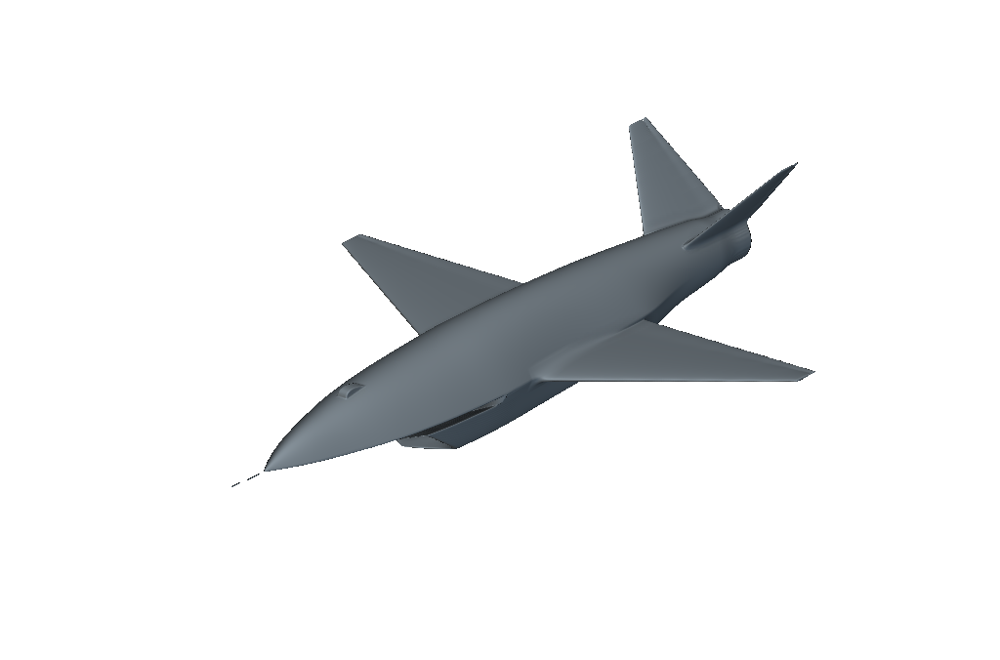
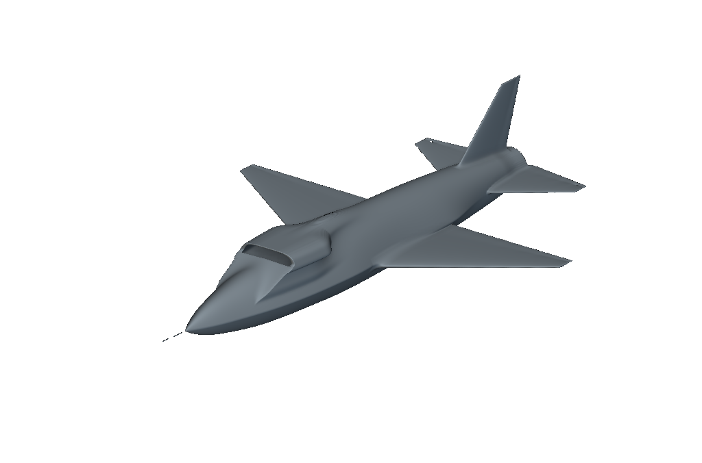
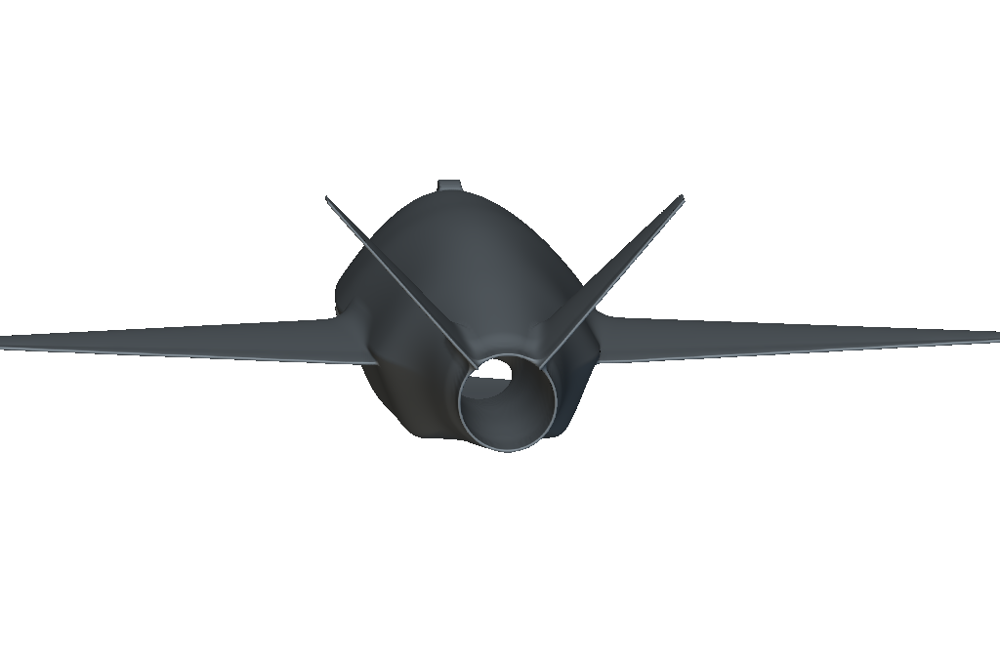
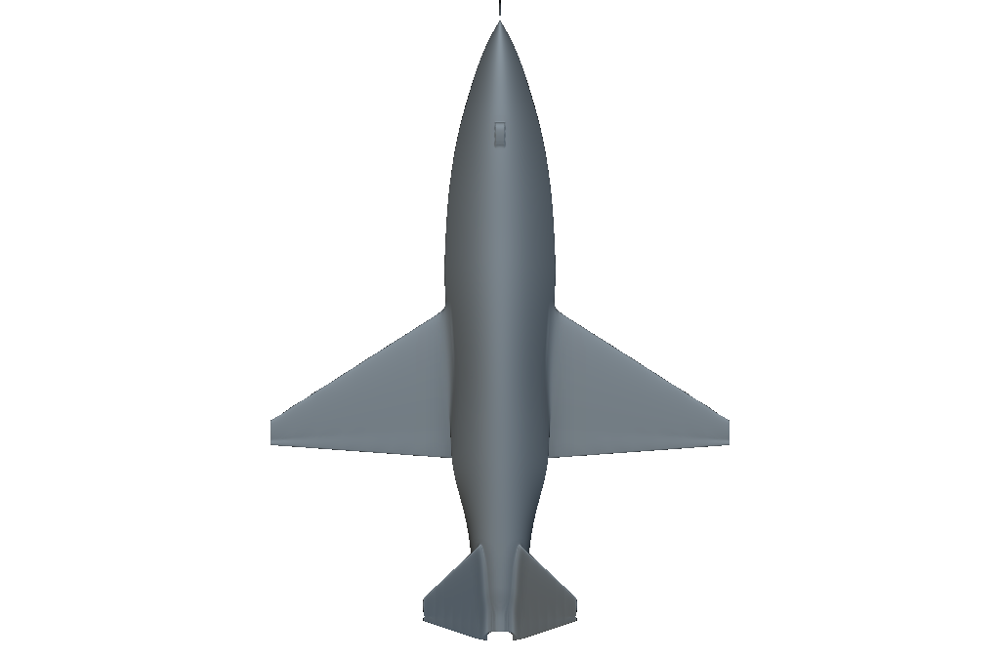
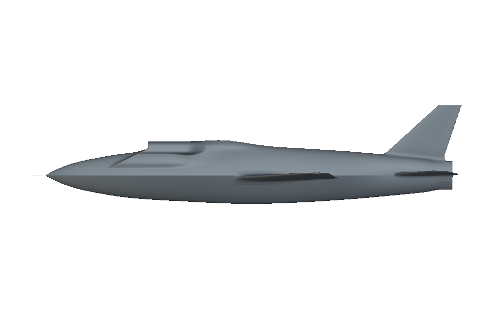
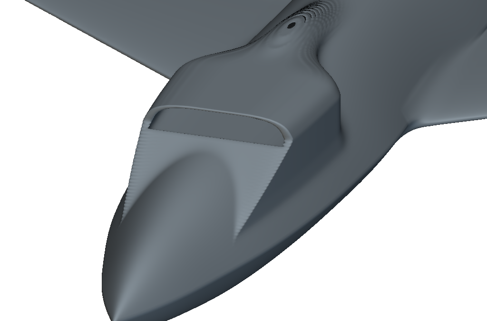
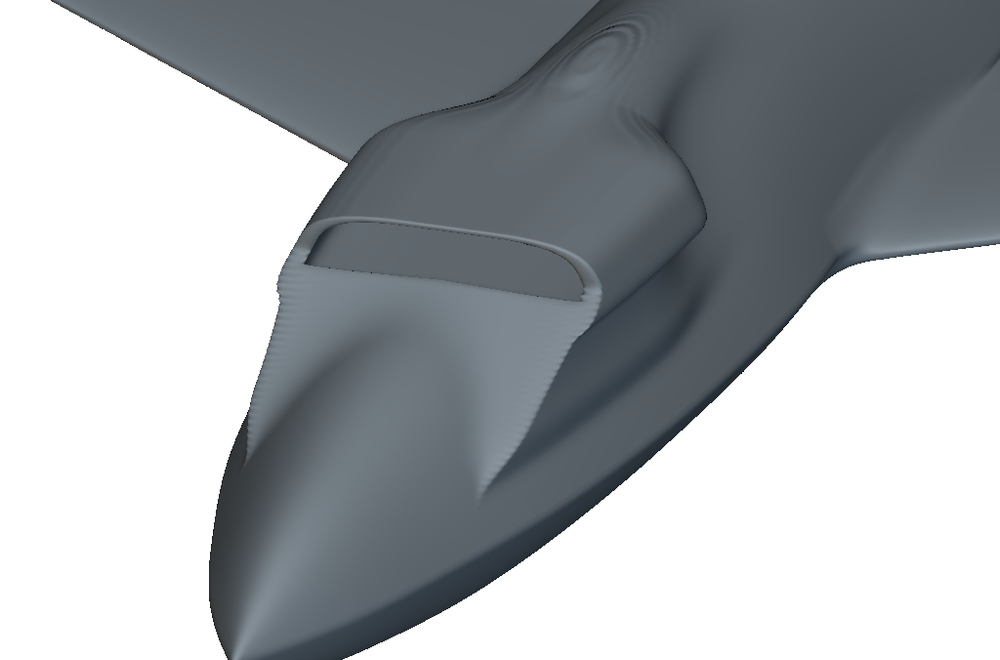
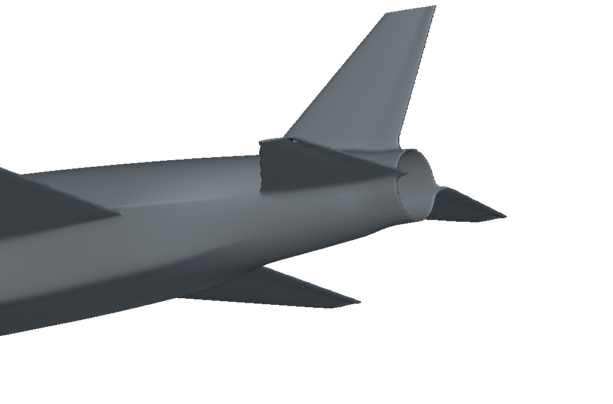
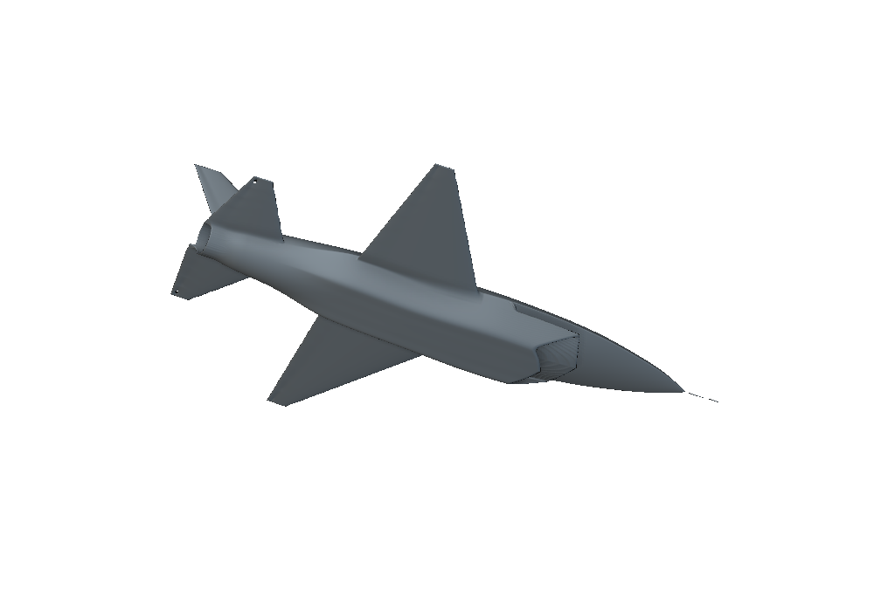

A / V-tail
The ventral inlet stays in place. The cant angle is editable and starts at 45°.
Editable native geometry for the 16 ft RC model.
V-tail and dorsal inlet are separate revisions. Both include the new aft-body treatment.
Explore the revisions ↓
The ventral inlet stays in place. The cant angle is editable and starts at 45°.

The conventional tail stays upright. The inlet uses the earlier compact shape with a longer local transition.
These are geometry alternatives. Neither has an aircraft CFD solution or a stability assessment.

The original tail spline sections rotate as rigid sections. Their root supports follow the rotation.
Native checks confirm material at six new tail points and clearance at the former stabilizer locations.

The retained 0.5-inch trailing-edge controls remain editable. The cant is a design choice, not an optimized value.
The narrower inlet and longer forward cheeks return from rev11. The outer section loft transitions over more distance, with a larger local attachment blend.

The outer C2 Ramp has editable start and end stations in physical RC units. An enclosing field retains material around the original passage.
The inlet size factors remain 0.72 in width and 0.68 in height. They are editable concept settings, not measured aperture reductions. The wing, conventional tail and revised boattail remain.


The outer transition now runs from -0.28 to +0.04 in native guide coordinates. Previously it ran from -0.23 to -0.06. These are concept settings, not photo measurements.
The current notebook uses native conic surfaces and implicit fields. These images are direct nTop captures, without smoothing or retouching.
Contour bands remain at the aft join and forward cheeks. A narrow aft spine is still visible. These native views support a visual comparison; they do not establish a measured likeness or continuous surface quality. Open the preserved rev11 model.
Reference image retained only in the separate downloadable collection.
Open the official overhead photograph and source
The cowl does not end in a narrow tube-shaped neck. Its shoulders join the broader body near the wing roots.
Reference image retained only in the separate downloadable collection.
Open the official flight photograph and source
The rounded aperture sits above the nose crown. Its roof becomes part of the upper fuselage contour.
Additional inspected view: USAF landing photograph, 22 July 2026. Public photos establish appearance cues, not production dimensions or internal geometry. GA-ASI images load from the source websites and require an internet connection.

The section becomes circular earlier. A C2 Ramp joins the taper to the circular exhaust surround.
Reference image retained only in the separate downloadable collection.

The retained camera uses manual nose and tail landmarks. The photograph does not establish exact section dimensions or a measured likeness score.
| Item | V-tail revision | Dorsal-inlet revision |
|---|---|---|
| Wingspan | 16 ft | 16 ft |
| Tail | 45° V-tail; editable | Conventional HStab and VStab |
| Inlet | Ventral | Dorsal |
| Trailing edges | 0.5-inch controls retained | 0.5-inch controls retained |
| Boattail | Revised circular aft loft | Same revised circular aft loft |
| Construction | Native lofts, splines and field transforms | Native lofts, splines and field transforms |
| Imported mesh source | None | None |
| Native sample checks | 20 passed | 96 passed |
Boattail controls use physical RC dimensions. They set the circular transition stations, rim radius and exit station.
The original aerodynamic baseline remains unchanged. A separate conventional-tail notebook isolates the new boattail appearance.
Finite geometry probes and native renders do not certify continuous surface quality, mesh suitability, hardware fit or flight performance.
Compact dorsal check evidence ↗
V-tail and boattail check evidence ↗
CFD readiness and sweep plan ↗
Aircraft CFD has not started. The baseline surface and volume mesh still fail qualification. The dedicated GCP worker is stopped.
Model images are actual native nTop captures. The dorsal before view is rev11; current dorsal views are rev19. The Fury flight photograph is the supplied reference. Static link and image checks are recorded. Browser layout and interaction were not verified.